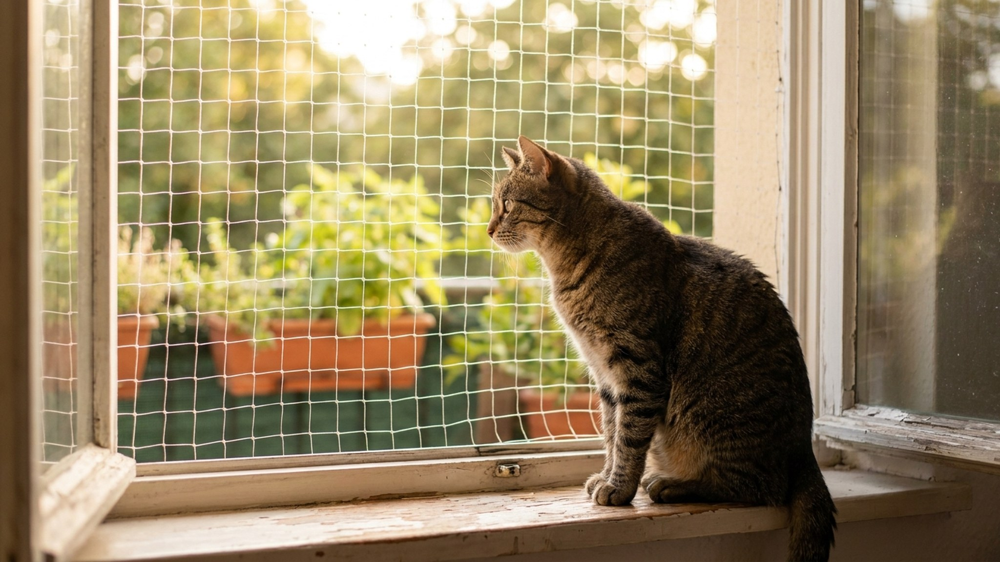

Каждый год с приходом тепла ветеринарные клиники фиксируют десятки случаев падения кошек из окон — явление настолько распространённое, что получило медицинский термин high-rise syndrome. Animal Medical Center в Нью-Йорке описал 132 случая за один летний сезон: 90% кошек выжили, но почти у всех были серьёзные травмы. Два главных мифа убивают: «она приземлится на лапы» и «москитная сетка удержит».
🐾 Экономьте на лишних визитах к врачу
Сначала спросите AI-ветеринара в AnimaLife — часто этого достаточно, чтобы понять, нужен ли визит к врачу.
High-rise syndrome — термин, введённый ветеринарами после систематизации травм, характерных для падения кошек с высоты. Кошки не падают из окон из-за неловкости. Они падают потому, что:
Летом риск многократно выше: окна открыты постоянно, насекомых больше, кошки активны. По данным московских ветеринарных клиник, пик случаев — с мая по сентябрь. Особенно уязвимы молодые кошки до 2 лет: они более импульсивны и меньше умеют оценивать дистанцию.
У кошек действительно есть рефлекс переворота (righting reflex) — вестибулярная система и гибкий позвоночник позволяют кошке в свободном падении выровняться и приземлиться лапами вниз. Но это не означает «без травм».
При приземлении лапами кошка получает:
Исследование Whitney & Mehlhaff (Journal of the American Veterinary Medical Association) показало: из 132 кошек, упавших с высоты 2-32 этажей, 37% потребовались экстренные хирургические вмешательства, у 11% травмы были несовместимы с жизнью даже при оказанной помощи.
Это контринтуитивный факт из той же статистики. Кошки, падающие с высоты выше 7 этажей, демонстрируют несколько лучшую выживаемость и менее тяжёлые переломы конечностей — по сравнению с кошками, упавшими с 5-6 этажей.
Объяснение — терминальная скорость и поза тела. При достаточно долгом падении кошка достигает терминальной скорости (около 96 км/ч), после чего прекращает ускоряться. В этот момент вестибулярная система «расслабляется»: кошка перестаёт активно выравниваться и принимает более распластанную позу — как «летяга». Распластанное тело создаёт большую площадь сопротивления воздуху, снижает ударную нагрузку на лапы.
Важно понять правильно: это не значит, что с высоты выше 7 этажей падать «нормально». Это значит, что ни одна высота не безопасна, а травмы гарантированы при любом падении. Парадокс описывает физику, а не рекомендацию.
Москитная сетка — это сетка от комаров. Она крепится к раме лёгкими защёлками или магнитами и рассчитана на давление ветра, но не на вес живого животного.
Средняя кошка весит 3,5-5 кг. При резком прыжке или опоре о сетку динамическая нагрузка возрастает до 10-15 кг. Стандартная москитная сетка выдерживает 2-4 кг статической нагрузки. Результат — сетка вылетает из пазов вместе с кошкой.
Именно из-за этого в ветеринарных отчётах москитная сетка фигурирует как «ложная защита»: хозяин уверен, что окно «защищено», и оставляет кошку без надзора. Риск при наличии москитной сетки может быть выше, чем без неё — за счёт иллюзии безопасности.
Надёжная защита окна — это специализированная сетка «Антикошка» или металлическая решётка, установленная с учётом нагрузки.
Сетки «Антикошка»:
Металлические решётки: более надёжны механически, но требуют разрешения управляющей компании (технически относятся к изменению фасада), дороже, и некоторые кошки могут застрять между прутьями при неправильном шаге (оптимальный шаг — 40-50 мм).
Балкон: застеклённый балкон безопаснее открытого, но не исключает риска полностью — кошка может выскользнуть в щель при открытой створке. Сетку «Антикошка» можно натянуть и на балконный проём.
Главное правило: не ждать симптомов. Кошка, упавшая с высоты, выглядит внешне целой, ходит и даже не кричит — это не значит, что она в порядке. Внутреннее кровотечение, пневмоторакс, разрыв мочевого пузыря не видны снаружи.
Алгоритм:
В клинике: рентген грудной клетки, брюшной полости, конечностей и челюсти, анализ мочи. Инфузионная терапия при шоке. Срок стационара зависит от травм — от 1-2 суток до нескольких недель.
Комплект сеток «Антикошка» на одно окно — 2 000-4 500 руб. в зависимости от размера и производителя. На два окна + балкон — 8 000-15 000 руб. с установкой.
Лечение при типичном высотном падении (перелом лапы + пневмоторакс + надрыв нёба): рентген 3 000-5 000 руб., хирургия и анестезия 25 000-60 000 руб., стационар 2 000-4 000 руб./сутки. Итого при неосложнённом случае — 30 000-80 000 руб. При тяжёлом — значительно больше.
Защита окна — это разовая инвестиция, которая исключает ситуацию полностью. Установить сетку в начале лета — самое практичное, что можно сделать для кошки прямо сейчас.
🐾 Всё о вашем питомце — в одном приложении
AI-ветеринар, дневник, напоминания о прививках и уходе. Установите AnimaLife — это бесплатно, в Telegram и MAX.